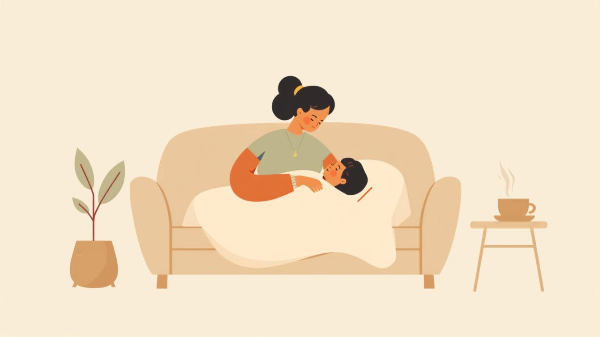

Krank in der Kindertagespflege – Regeln & Vertretung

Rund um Krankheit stellen sich zwei Fragen: Was, wenn dein Kind krank ist – und was, wenn die Tagesmutter ausfällt? Beides lässt sich gut regeln, wenn man es vorher bespricht. Hier bekommst du den Überblick über Regeln, deine Rechte als Eltern und die Vertretung.
- Krankes Kind bleibt zu Hause – zum Schutz der anderen und zur Erholung.
- Bei ansteckenden Krankheiten gelten die Regeln des Infektionsschutzgesetzes.
- Eltern haben meist Anspruch auf Kinderkrankengeld (§ 45 SGB V).
- Fällt die Tagesmutter aus, greift die Vertretungs-/Ersatzbetreuung.
- Am besten alles vorab im Betreuungsvertrag festhalten.
Wenn dein Kind krank ist
Ein krankes Kind gehört nach Hause – es braucht Ruhe, und in der kleinen Gruppe der Tagespflege sollen sich nicht alle anstecken. Wann dein Kind wiederkommen darf, besprichst du mit der Tagesmutter. Bei bestimmten ansteckenden Krankheiten (etwa Magen-Darm-Infekten oder Kinderkrankheiten) gelten die Vorgaben des Infektionsschutzgesetzes für Gemeinschaftseinrichtungen – dann ist eine Rückkehr oft erst nach Abklingen oder mit ärztlicher Rückmeldung möglich. Informiere die Tagesmutter frühzeitig, wenn dein Kind etwas Ansteckendes hat.
Kinderkrankengeld: dein Anspruch als Eltern
Wenn du wegen deines kranken Kindes zu Hause bleibst, stehst du nicht ohne da: Gesetzlich Versicherte haben in der Regel Anspruch auf Freistellung von der Arbeit und Kinderkrankengeld für eine bestimmte Zahl an Kinderkrankentagen pro Jahr und Kind (§ 45 SGB V). Wie viele Tage dir zustehen und wie du sie beantragst, erfährst du bei deiner Krankenkasse – oft genügt eine ärztliche Bescheinigung.
Wenn die Tagesmutter ausfällt
Anders als eine Kita mit mehreren Fachkräften betreut eine Tagesmutter allein – wird sie krank oder hat Urlaub, braucht es eine Vertretung. Dafür gibt es verschiedene Modelle:
- eine feste Ersatztagespflegeperson, die dein Kind im Vertretungsfall kennt,
- ein von der Kommune organisierter Vertretungspool bzw. Ersatzbetreuung,
- in der Großtagespflege springt die Kollegin ein, die dein Kind ohnehin kennt.
Wichtig ist, das vorher zu klären: Frag die Tagesmutter, wie sie Vertretung organisiert, und erkundige dich beim Fachdienst Kindertagespflege nach den Vertretungsmodellen deiner Kommune.
Häufige Fragen
Wann muss mein krankes Kind zu Hause bleiben?
Bekomme ich Kinderkrankengeld?
Was, wenn die Tagesmutter krank ist?
Wer organisiert die Vertretung?
Hinweis: Dieser Beitrag gibt eine allgemeine Orientierung. Rechtsgrundlagen sind u. a. das Infektionsschutzgesetz und § 45 SGB V; konkrete Regeln und Vertretungsmodelle unterscheiden sich je nach Kommune und Krankenkasse. Verbindliche Auskünfte geben Jugendamt und Krankenkasse.
Weiterlesen: Der Betreuungsvertrag · Gute Tagesmutter erkennen · Kita oder Tagesmutter? · Tagesmütter ansehen